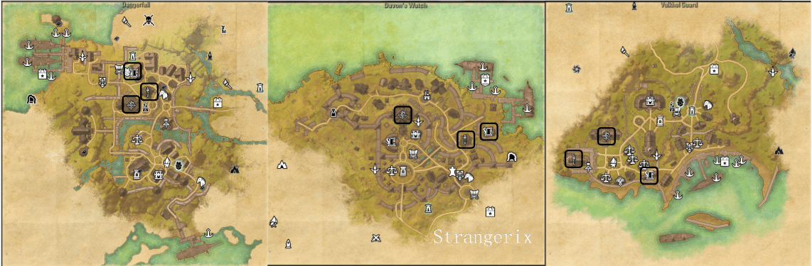
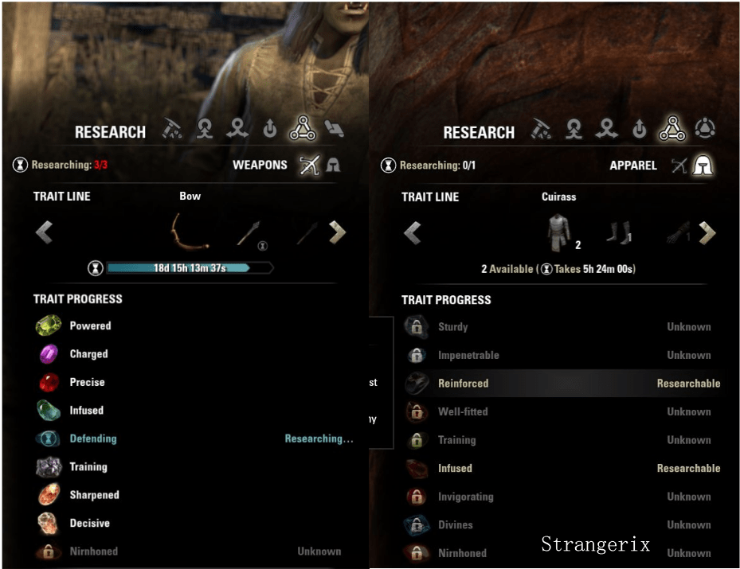
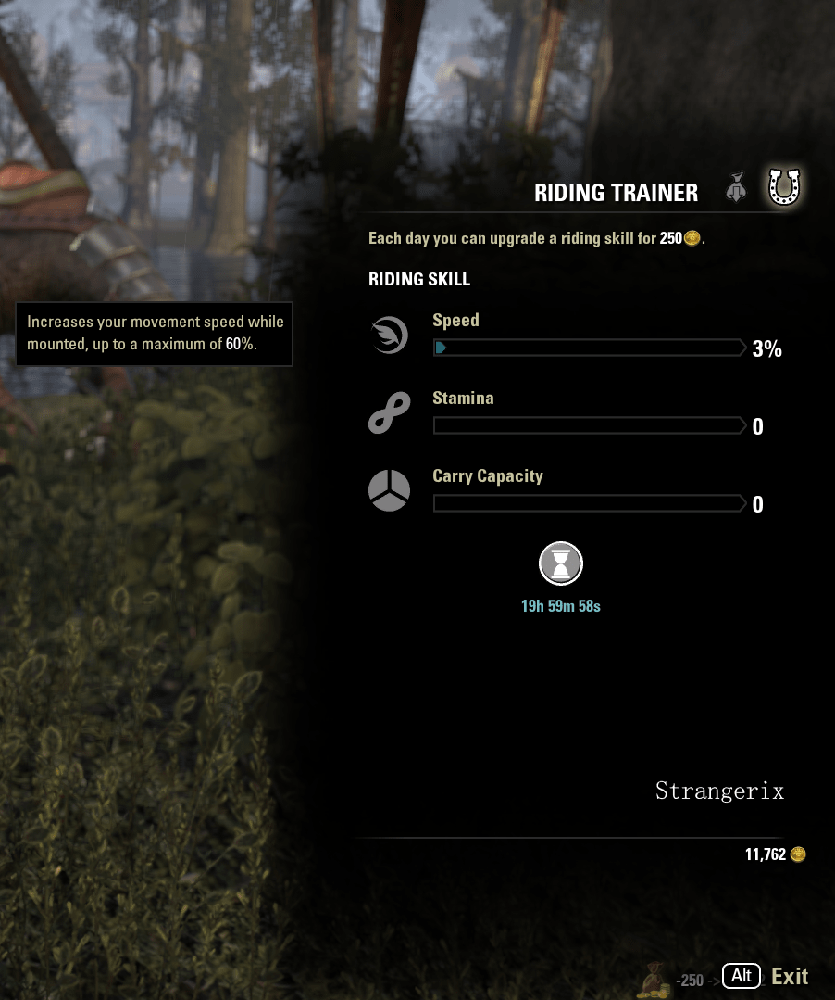
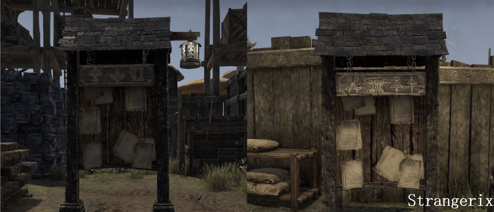
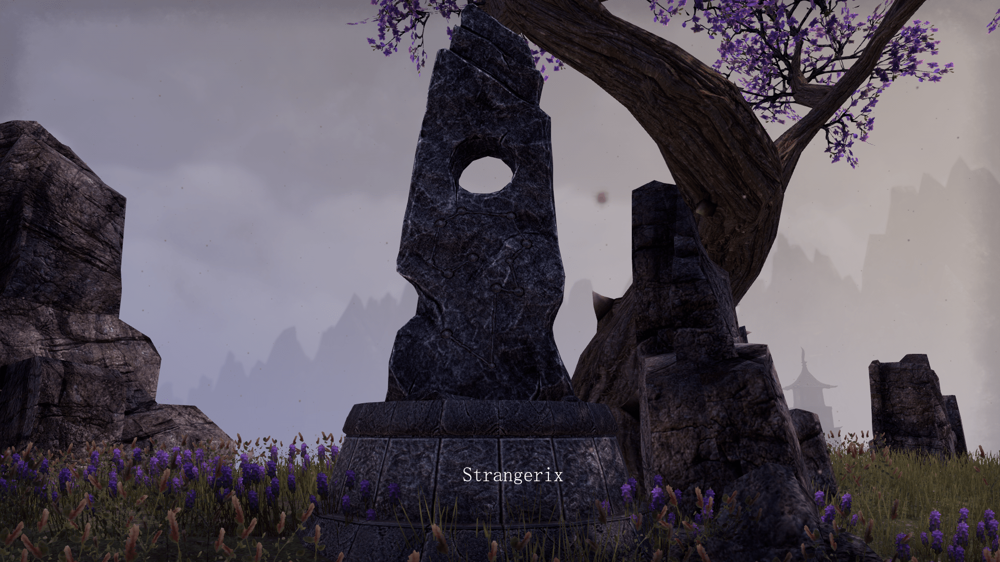

Na początku rozgrywki jesteśmy wręcz zasypywani nowymi rzeczami, czynnościami które możemy wykonać oraz mechanizmami gry.
Żeby się w tym nie zagubić i przypadkiem nie zapomnieć o ważnych rzeczach warto wymienić kilka podstawowych czynności

Mamy 3 gildie: magów, wojowników oraz Undaunted.
Gildie magów lvl'ujemy poprzez zbieranie ksiąg rozrzuconych po świecie Tamriel.
Wojowników poprzez zabijanie nieumarłych, daedr i tym podobnego ścierwa.
Natomiast Undaunted poprzez chodzenie do dungeonów i zdobywanie związanych z nimi osiągnięciami.
Warto zapisać się do każdej z nich, bo każda niesie ze sobą wiele korzyści.

Polega on na rozkładaniu części ekwipunku w celu poznania traitu. Przydaje się to nie tylko do tworzenia nowych przedmiotów ale również do zmiany traitu na już istniejących rzeczach.
Jak widać czas jest coraz dłuższy, więc czym prędzej się za to zabierzecie, tym lepiej.
W drzewkach odpowiadających za daną dziedzinę znajdziecie skill zwiększający ilość researchów, które możecie robić naraz oraz skracający czas o kilkanaście procent.

Każdy z nas lubi poczuć wiatr we włosach, a czym szybciej, tym lepiej.
Szybszy koń, więcej miejsca w plecaku oraz większa wytrzymałość na ataki podczas jazdy.
Temu właśnie odpowiadają te 3 paski i w takiej kolejności powinno się je zapełniać.
Każdy kolejny punkt kosztuje 250 golda (czyli tyle co kilka drinków w taniej spelunie) a więc na pewno każdego stać na taki dzienny wydatek.
Niestety każda postać musi rozwijać swoje umiejętności jeździeckie osobiście.
Wymaga to zalogowania się na nią i odwiedzenie odpowiedniego npc. Nie ma krótszej drogi :/

W gildii mawiają nasi heal'erzy: Czerwone nie leczy. Jednak często kolor czerwony miesza się z otoczeniem.
Dlatego warto zmienić to na taki, który nas będzie najbardziej odpychał (Wcale nie mam na myśli różowego... no może troszkę).
U mnie jest to fiolet i spełnia on świetnie swoją rolę.

Są to zadania dzienne polegające na wykonaniu kilku przedmiotów, za które dostajemy paczkę z nagrodami.
Jedną z nich jest Master Writ, czyli specjalne zamówienie, za które dostaniemy dodatkową walutę potrzebną do kupienia przepisów na bardziej zaawansowane meble.

Maksymalnym poziomem każdej postaci jest 50. No i co dalej?
System CP pozwala nam lvl'ować nie tyle postać co całe konto, ponieważ CP są uwzględniane na każdej postaci.
Zdobywa się je poprzez expienie postacią, którą już osiągnęliśmy 50 lvl.
Samo rozdawanie CP jest już specyficzne i utożsamione z rolą, jaką chcemy pełnić w grze.

Specjalne kamienie których użycie nadaje nam permanentny bonus do danej statystyki. Poza jednym wyjątkiem, każdy może posiadać jeden bonus naraz.
Wybór mundusa jest uzależniony od naszej roli oraz rodzaju contentu, jaki chcemy grać.